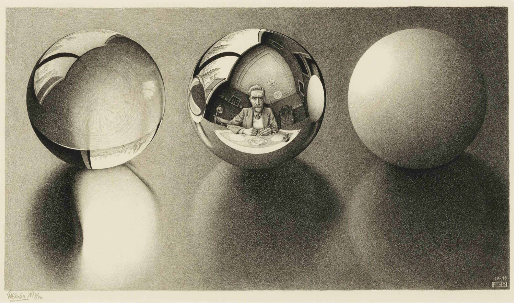

Saikeerthi (Rani) Rachavelpula
I am a PhD candidate in the Department of Philosophy at Columbia University. I work primarily in logic and metaphysics with additional interests in Kant, epistemology, ethics, and the philosophy of science. My research focuses on philosophical issues concerning the structure of space and the nature of spatial reasoning.
My dissertation examines three classic spatial paradoxes: (1) Anaxagoras’s problem of gunk, concerning the infinite divisibility of space; (2) Zeno’s paradox of measure, concerning the nature of spatial extension; and (3) Kant’s problem of incongruent counterparts, concerning handedness (or chirality). Drawing on formal tools from Fourier analysis, geometric measure theory, and projection theory, I develop philosophically novel and mathematically rigorous resolutions to the paradoxes that challenge traditional conceptions of space, from Democritus to Tarski. I further show that these results have applications extending beyond metaphysics to fields including physics, computer science, and cognitive science. Together, these projects show how age-old spatial paradoxes can motivate more adequate theories of space, spatial representation, and spatial reasoning.
Before beginning my PhD, I received a BA in Mathematics with a minor in Philosophy from Columbia University (magna cum laude). I also spent a year studying mathematics at the University of Cambridge as an Oxbridge Scholar.
Papers
- “Generating Gunk,” Journal of Philosophical Logic
- “Modelling Morality: A Kantian Account of Moral Examples,” Kantian Review
In Progress
- A paper on the difference between left and right hands
- A paper on Buffon’s Needle Problem
- A paper on Euler and Kant
- A paper on John Stuart Mill’s “experiments in living”
Other Writing
- “If you’re feeling sinister: How lefties sow chaos,” Open Tennis
- “Racquets in Retrograde: Tennis’s problem with nostalgia,” Open Tennis
- “All the Raj: Anand Amritraj’s Archive Fever,” Racquet
- “Below the Belt: A Mini History of the Tennis Skirt,” Racquet
Online
- “At Long Last, Short Shorts are Back,” The Second Serve
- “Debanjan Roy,” Artforum Critics’ Pick
- “The Category of Mereotopology and Its Ontological Consequences,” UChicago Mathematics REU
Teaching
- Sole Instructor (Columbia University): Introduction to Symbolic Logic
- TA (Columbia University): Epistemology, Introduction to Logic, Symbolic Logic, Ethics, Methods & Problems of Philosophical Thought
- Grader (NYU): Advanced Introduction to Bioethics, Environmental Ethics
Service
- Volunteer Fellow, Ruttenberg Cancer Treatment Center, Mount Sinai, 2025-26
- Provost Diversity Fellow, Columbia University, 2019-2020
- Referee: Noûs
Newsletters
I believe that learning is most effective when it is active—when students work through problems and experience, as Kant describes, the pleasure that comes from expanding the powers of one’s own mind. In 2025, I maintained a monthly puzzles newsletter designed to foster this kind of engagement with respect to logic and mathematics.
Website
The photograph of me above is by David Kaminsky. This website is maintained and hosted by Aaron Friedman. It’s (mostly) powered by the sun!
